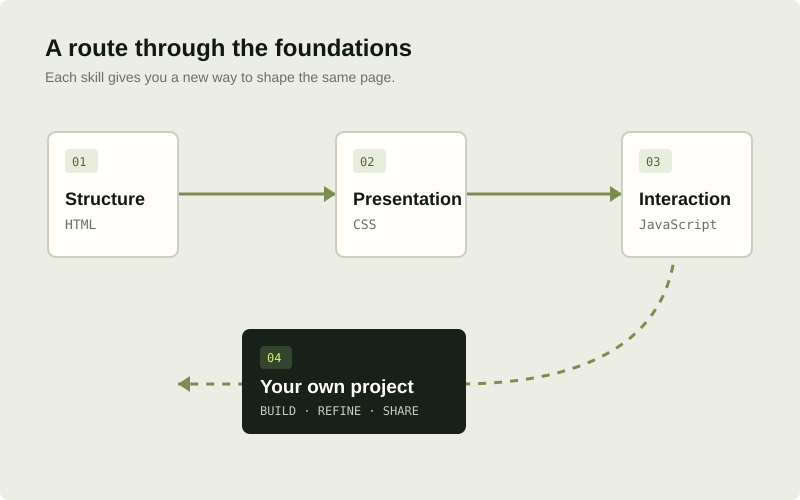

A PRACTICAL ROUTE THROUGH THE FOUNDATIONS
One useful step
at a time.
There is no single correct speed. This roadmap gives the topics an order, explains what each stage is for, and suggests a small deliverable so you can see your progress.

HOW TO USE THIS ROADMAP
Learn a concept.
Use it straight away.
Keep the first version small. Make it work, test it at different sizes, then improve one detail at a time. Notes about the decisions you made are part of the learning too.
Find a project briefTHE FOUR STAGES
From the first tag
to your own work.
Move on when you can explain what you made and why it works—not when a calendar tells you to.
- 01
STRUCTURE / HTML
Give the page a foundation.
Write a real document with semantic landmarks, useful headings, descriptive links, and images that have thoughtful text alternatives.
Your deliverableA single article page that still makes sense with styles turned off.Open the HTML guideReady to move on?You can explain the purpose of the main HTML elements on your page and navigate its links with a keyboard.
- 02
PRESENTATION / CSS
Make it clear at every size.
Build a visual hierarchy, apply a consistent spacing system, and create a layout that adapts to both narrow and wide screens.
Your deliverableA responsive article or magazine layout with readable type and real focus states.Open the CSS guideReady to move on?Your content reflows without clipping or horizontal scrolling, and the visual hierarchy is easy to follow.
- 03
BEHAVIOR / JAVASCRIPT
Add interaction with purpose.
Use JavaScript to respond to an event, update the interface, and explain the result. Keep the feature small enough to test.
Your deliverableAn accessible filter, menu, or checklist that works with pointer and keyboard input.Open the JavaScript guideReady to move on?You can describe the state, event, and outcome in your feature and test the interaction without a mouse.
- 04
CRAFT / YOUR PORTFOLIO
Present the work honestly.
Choose a project, polish the details, write a useful README, and deploy a demo. Explain what you made, what you learned, and what you would improve.
Your deliverableA public project page with a working demo, source code, setup notes, and your own explanation.Choose a project briefReady to share?A visitor can understand the project, find the code, run it, and see which work and decisions are yours.
A SUSTAINABLE STUDY LOOP
Progress is
made by returning.
Choose a small task you can finish, save a working version, and write down one thing you understand better now. Revisit that note when you return to your code.